Gefleteknologerna
Futurum 2024
Gefleteknologernas arbetsmarknadsdag på Högskolan i Gävle.
Futurum är Gefleteknologernas arbetsmarknadsdag där du som student kan få möjlighet att anknyta kontakter med potentiella företag för framtiden.
Futurum kommer att vara den 20 november på Högskolan i Gävle.
Tiderna för dagen är 8:00-15:00
Om du är ett företag som vill synas och vara med på Futurum så hör av dig till futurum@gefleteknologerna.se
Adress: Gefleteknologerna, Stenhammarsvägen 15, 80267 Gävle
E-post:
futurum@gefleteknologerna.se
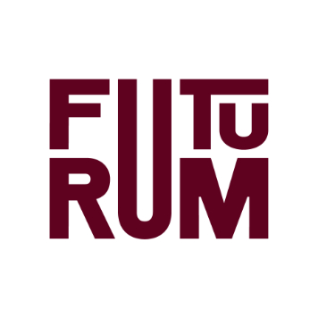
Futurum schema
Föreläsningar
| Tid | 33:202 | 33:203 |
|---|---|---|
| 08.15-11.00 | ”Co-op dagen” – Magnus Lemoine | |
| 10.45-11.45 | ”ByggDialog – Sveriges ledande partneringentreprenör” – Byggdialog | |
| 11.00-12.00 | ”Generative AI: From hype to reality” – Alleima | |
| LUNCH | LUNCH | LUNCH |
| 13.00-14.00 | ”Lantmäteriets stöd i kris med GIS” – Caroline Lindhe, Utbildningsansvarig & Rickard Hallengren, Gis-Handläggare | ABB |
| 14.15-15.15 | ”Laserskanning i en mätkonsults vardag” – Clinton |
Medverkande
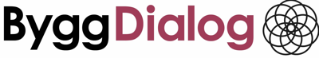
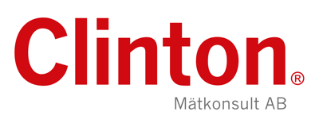
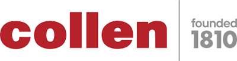
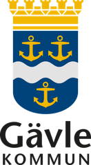
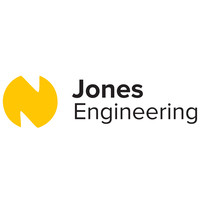
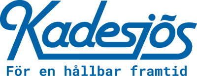
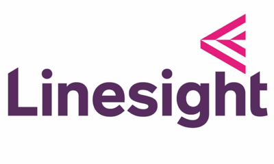
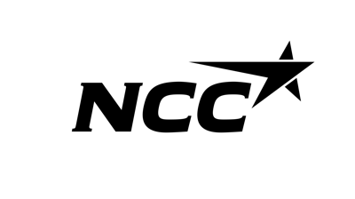
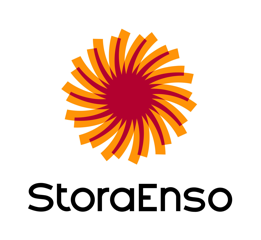
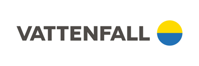